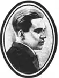

Іван КАЛЯННИК
Калянник (Калянников) Іван Іванович народився 12 березня 1911 року в с. Дятьково (тепер райцентр Брянської обл.) в сім'ї службовця. Коли хлопцеві минуло 11 років, родина переїхала до Харкова. Тут він здобув середню освіту. Після закінчення профшколи став працювати розмітником на Харківському паровозобудівному заводі, був активним членом заводської літературної студії, друкував статті та вірші в багатотиражній газеті "Харківський паровозник", у рукописному журналі "Новий цех".
Спершу писав російською мовою, друкуючись у газеті "Брянский рабочий", журналах "Огонек" і "Красная новь". 1930 року стрівся з Павлом Тичиною, який порадив для українських робітників писати їхньою рідною мовою. Поет-початківець змінив прізвище, а невдовзі в харківській періодиці почали з'являтися його твори українською мовою, які одразу ж привернули увагу читачів і літературної критики. "Перші статті про Івана Калянника, — згадував пізніше Микола Нагнибіда, — були сповнені надією і пророцтвом — в українську поезію йшов обдарований і самобутній поет". 1931 року І. Калянник вступив до Харківського технікуму сходознавства та східних мов. На практику їздив до Таджикистану, звідки привозив нові цикли віршів, які опісля ставали книгами. Видав збірки поезій; "Бригадир", "Риси обличчя", "Струм" (1931), "Висока путь" (1932), "Поезії" (1932), "Майдан", "Східні новели", "Товариш Карий" (1934), "Гордість" (1936) та ін. Калянник належав до літературного угруповання "Пролеткульт", був членом СП СРСР. Співробітник Харківського обласного управління НКВС Замков розглянув матеріали, які ніби свідчили про те, що Іван Калянник "був учасником контрреволюційної фашистської терористичної організації, яка мала мету боротися з Радянською владою", і ухвалив тримати його "під вартою в спецкорпусі № 1", щоб він "не зміг ховатися від суду і слідства", його заарештували 4 листопада 1936 року в Харкові. На допитах, які вів слідчий Лисицький, Калянник не визнавав за собою ніякої вини. Термін утримування його за ґратами продовжували п'ять разів. 13 квітня 1937 року його перевели в спецкорпус Київської тюрми, де скоро змусили визнати свою належність до контрреволюційної організації. На закритому судовому засіданні 14 липня 1937 року Військова колегія Верховного Суду СРСР засудила письменника до найвищої міри покарання — розстрілу. Вирок виконано 15 липня 1937 року. При додатковому розслідуванні справи Калянника позитивні характеристики йому дали Сергій Борзенко, Терень Масенко, Микола Нагнибіда. "Іван Калянник, — підкреслив С. Борзенко, — був прекрасним поетом, а найголовніше — справжньою радянською людиною". Військова колегія Верховного Суду СРСР 21 січня 1958 року скасувала вирок щодо поета і справу припинила через відсутність складу злочину. Іван Калянник реабілітований посмертно. Олександр Мукомела ЛУ 34 (4443) 22.08.1991